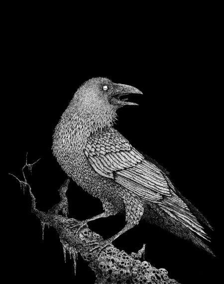

Mi-e setea neînsetată
Și aurul mi-e argintat
Mă uit lung la privirea ne-ncetată
Ci până și sufletul mi-e uitat.
Străin aduce chipul de marmură înzestrat;
Corbul unui giuvaier crăpat
Se miră privind coloana îndelung
Și stins adună scrumul brun...
În ceață sadic s-a desprins largul ne-ncetat...
Și privești la a lui margine beteag?!
Ce vrei tu din astu-mi coamă
Care cerului uitării i s-a dat
Povară-ți spun și-ți jur pe suflet
Nu este aici ce-ai căutat!
Din cripta-naltă apune peste el
Un flutur răzvrătit de zel
Căci casa-i nu mai este
Coama casă acum îi este.
Lesne privind, omul împietrind
Își scutură răgazul și-i scapă măreția
Dintre minți.
Condus se lasă ulterior,
Fiind dus spre zbor la interior
Ș-afar-și preface corbul
Tenebra înfățișare-apoi,
Din cristal s-a pus să lingă
Mustrând al cerului noroi
Din coroana duhului tu mi te-ai dat
Nu vezi tu, copil firav, ceața ce
Păru-ți a încețoșat?
Din văz se pierde copilul lumii
Înveșmântat acum în patimi
În zbor înalță flămând cu lacrimi
Și din scoarță preface lacrimi...
Fâlfâie-și cristalul și marmura și voalul
Scuturat de ploaie, dune; valul
Năpusti în pană, iar cenușa-i îmbibă în aur
Coama-n ramură crăpă,
Dar marmura în mal scăpă.
Cuget de vânt, fior adânc
Surprinsă coama penii-n zbor
Și furtună dinspre lună...
Și corbul cântă strună...
